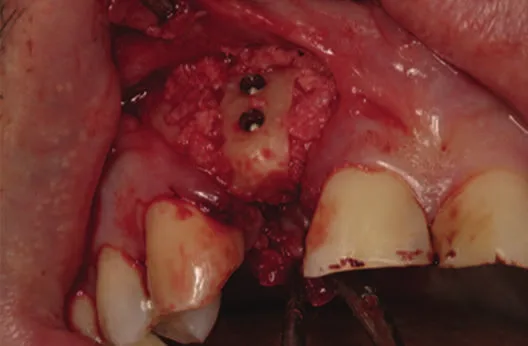
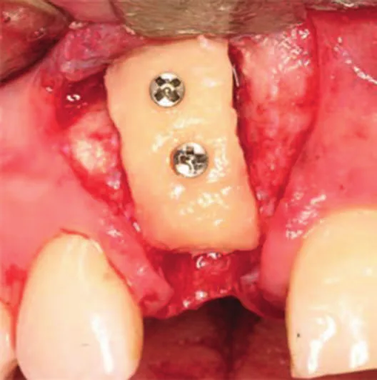

نسخه استخراجشده؛ ترجمه یا تأیید علمی انجام نشده است. وضعیت: captured
علت اصلی شکست بلاک گرافت در یک تصویر خلاصه میشود: «بلاک گرافت با تطابق ضعیف به محل، احتمال نانیونیون را افزایش میدهد.» و در جای دیگر: «شکست بلاک اتوژن ناشی از نانیونیون بلاکها و استخوان میزبان.»
پس مسئله چیست؟ نه کیفیت استخوان، نه ماده، نه تکنیک برداشت — تماس و بیحرکتی. بلاکی که با بستر تماس کامل ندارد، جوش نمیخورد؛ فاصلهی میان دو سطح، رگزایی اولیه و سپس استخوانسازی را مهار میکند.
و راهحل، شکل دادن به بستر است نه به بلاک:
• «محل گیرنده اصلاح میشود تا فیت پسیو بلاک گرافت ممکن شود.»
• «محل گیرنده به شکلی درآمده که بلاک گرافت را در بستری صاف بپذیرد.»
• و پیش از تثبیت: بستر باید طوری آماده شود که گرافت هنگام تثبیت «تکان نخورد» (rocking)؛ تکان خوردن بلاک کورتیکال تقریباً همیشه به نانیونیون میرسد.
• آمادهسازی بستر یعنی برداشتن همهی بافت فیبروزی با فرز روند درشت و دکورتیکاسیون تا حد خونریزی، تا راه رگها و سلولهای استئوژنیک به بلاک باز شود.
کلمهی «فیت پسیو» را نگه دار — همان مفهومی که در پروتز میشنوی، اینجا هم حاکم است: قطعه باید بدون فشار در جای خود بنشیند، نه اینکه با پیچ به جای خود کشیده شود.
و برای فاصلههای باقیمانده: «ذرات مدولاری برای پر کردن شکافها و ناهمخوانیهای اطراف بلاک گرافت به کار میروند.»
یعنی پر کردن فاصله جایگزین تطابق نیست؛ مکمل آن است. اول بستر را میسازی تا فاصله کم شود، بعد باقیمانده را پر میکنی.
و یک نکتهی حیاتی دربارهی نگهداری بلاک پیش از کاشت:
قاعده روشن است: «استخوان نباید خشک یا در خون نگه داشته شود، چون این کار به مرگ سلولی میانجامد.» و روش درست: یک ظرف شیشهای سالین استریل (کلرید سدیم ۰٫۹ درصد).
به این توجه کن: خون هم مثل هوا مضر است. این خلاف شهود بسیاری است که فکر میکنند نگه داشتن استخوان در خون بیمار طبیعیترین کار است؛ فرآوردههای همولیز pH خون را پایین میآورند و سلولها را میکشند. آب مقطر هم مناسب نیست: هیپوتونیک است و سلولهای گرافت را لیز میکند.
و اهمیتش از همانجایی میآید که در ماژول پیوند خواندی: استخوان اتوژن تنها مادهای است که سلول زنده میآورد. اگر آن سلولها بمیرند، مزیت اصلی اتوژن از دست رفته است.

قاعدهی اول — تعداد. «دو پیچ باید گذاشته شود تا از میکروموومنت حین ترمیم جلوگیری شود.»
چرا دو تا و نه یکی؟ چون یک پیچ، یک محور چرخش میسازد. بلاک با یک پیچ تثبیتشده هنوز میتواند حول آن بچرخد — و همان چرخش، همان میکروموومنتی است که به نانیونیون میرسد.
و مقیاسش را بدان: میکروموومنتی فقط در حد ۲۵ میکرومتر میتواند حجم نهایی گرافت را تا ۴۰ درصد کم کند. شایعترین علت لقی بلاک هم همین دو است: تثبیت ناکافی، یا فشار پروتز پس از عمل.
قاعدهی دوم — پیشدریل. «پیچهای تثبیت باید همیشه پیش از وارد کردن گرافت پیشدریل شوند.»
هدفش این است که پیچ در جای ایدهآل بنشیند و گرافت هنگام تثبیت پایدار بماند. عمق سوراخ هم مهم است: در استخوان کورتیکال متراکم اگر سوراخ کوتاه باشد، ته پیچ به کف میخورد و فشار اضافهی پیچاندن ممکن است سر پیچ را بشکند.
قاعدهی سوم — تثبیت بایکورتیکال. «ایدهآل این است که پیچ تثبیت، تثبیت بایکورتیکال داشته باشد و اندازهگیری طول میتواند از راه اندازهگیریهای CBCT تعیین شود.»
و اینجا یک تمایز مهم است که نباید با بحث خونریزی در کاشت ایمپلنت قاطی شود: در کاشت ایمپلنت، بهویژه در قدام مندیبل، تثبیت بایکورتیکال دیگر توصیه نمیشود چون خطر سوراخ شدن پلیت لینگوال دارد. اما برای پیچ تثبیت بلاک گرافت، بایکورتیکال ایدهآل است.
چرا تفاوت؟ موفقیت ایمپلنت به درگیری کورتکس لینگوال نیاز ندارد و آن درگیری فقط پلیت لینگوال را تهدید میکند؛ پیچ تثبیت اما باید بلاک را تا پایان ترمیم کاملاً بیحرکت نگه دارد و بعد برداشته میشود. با این حال طولش را با CBCT دقیق بسنج: نوک پیچی که از کورتکس لینگوال بیرون بزند، مخاط نازک لینگوال مندیبل را آزار میدهد و درد میسازد.
قاعدهی چهارم — مستندسازی. «محل و تعداد پیچها باید همیشه مستند شود.»
چرا؟ چون این پیچها باید برداشته شوند، و کسی که چند ماه بعد فلپ را بازمیکند — شاید خودت، شاید همکارت — باید بداند دنبال چند پیچ و در کجا بگردد؛ گاهی استخوان روی سر پیچ رشد میکند و پیچ تازه پس از کاشت ایمپلنت پیدا میشود. پیچ فراموششده، یک جسم خارجی دائمی است.
و آنچه هنگام برداشتن با آن روبهرو میشوی: هشدار: «همانطور که فلپ رها میشود، پیچهای تثبیت استخوان باید از لایهی ضخیم بافت فیبروزی که به سر پیچ چسبیده جدا شوند.»
یعنی برداشتن پیچ، خودش یک مرحلهی جراحی با ظرافت خودش است، نه یک کار مکانیکی ساده.
و در پیوند ذرهای که پیچهای تثبیت فضای آن را تعریف کردهاند، معیار موفقیت با چشم دیده میشود: «گرافت بالغ پس از عمل تا سطح سرِ پیچهای تثبیت رشد کرده است» و «محل گرافت بالغ با بازسازی کامل استخوان تا سطح سر پیچهای تثبیت.»
پس سر پیچها همان چیزی را تعریف میکنند که در پایان خواهی داشت — دقیقاً همان اصلی که در تکنیک پیچ چادری دیدی.
